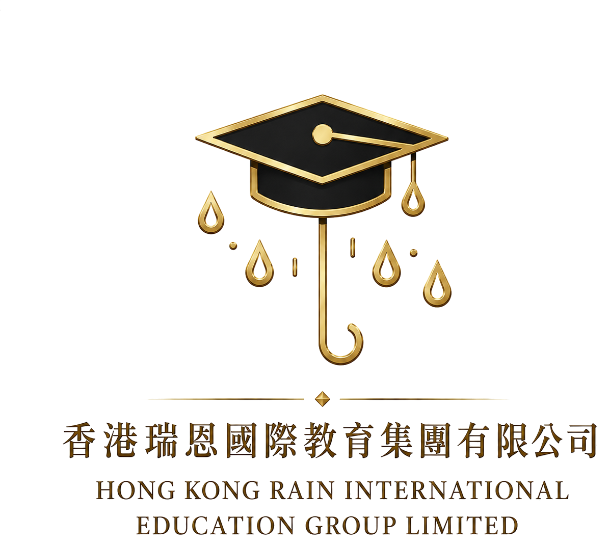

路径定位
香港副学士不是简单替代方案，而是帮助学生重新建立学术表现、适应英文授课环境并衔接本科的过渡平台。

HK8 Associate Degree Pathway
为高考后希望进入香港本科体系的学生，建立“副学士入读、GPA 管理、本科转入、硕士规划”的连续路径。
适合：高考生、国际课程转轨学生、副学士路径关注家庭香港副学士不是简单替代方案，而是帮助学生重新建立学术表现、适应英文授课环境并衔接本科的过渡平台。
能否转入理想本科，关键取决于副学士阶段 GPA、专业匹配、材料质量、语言能力和当年院校政策。
从高考评估、院校选择、入学衔接、选课建议到 GPA 管理和本科申请材料，提供阶段性跟进。
判断成绩、英语基础和目标专业是否适合香港路径。
选择课程、准备材料、管理申请节点。
帮助学生理解课程体系、课堂要求和学习节奏。
围绕课程、作业、论文和考试建立成绩管理机制。
根据目标专业规划实习、活动、项目和文书素材。
准备本科衔接材料、面试和后续硕士规划。
副学士路径结果受学生表现、课程选择、申请年份和院校政策影响。任何录取、保障或退款安排均以正式服务协议为准。